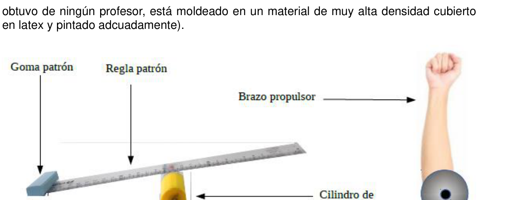

La Propulsa, una magnitud olvidada
PT161. Colegio N° 3 Mariano Moreno Ciudad Autónoma de Buenos Aires.
Introducción general en página 109.
La Propulsa, una magnitud olvidada Según la tradición oral preservada por los Guardianes del saber galileogalimbertiano, Galileo define la Propulsa como sigue: “Apoyada una regla solo en un punto de su largor (o longanismo), llamemos Propulsa a la vis impelida a una goma (de borrar) extremadamente apoyada o apoyada en un extremo, por medio de un golpe de puño lateral aplicado en el extremo restante”. En su febril obsesión por la Propulsa, y en su afán de lograr que se la incluya entre las magnitudes de los sistemas métricos, Galileo trabajó incansablemente en su normalización. En la imagen de más abajo se ve una reconstrucción hablada del Propellant patronus o Prolpulsa patrón, hecha por el Grupo Paleoinstrumental. (El estudiante no debe impresionarse por el antebrazo que aparece en la figura. No se
110 - OAF 2019 obtuvo de ningún profesor, está moldeado en un material de muy alta densidad cubierto en latex y pintado adcuadamente).
La Propulsa patrón era un dispositivo dimensionado por Galileo para imprimir en la goma patrón (o la goma de Galileo, una “Dos banderas” de 15g) una propulsa tal que la lance en vuelo parabólico con su máximo alcance desde el fondo del salón de clases, de unos 8 m de logitud1, hasta dar en la tonsura del Señor Abad2. La intensidad de tal propulsa, por definición, es de 1 Gg (un Galileo Galimberti).
a) ¿Con qué magnitud del Sistema Internacional tendrá equivalencia la Propulsa? ¿Es escalar o vectorial? ¿Cuál sería tal equivalencia?
Según los investigadores la regla era de madera, y por la descripción de los Guardianes sería una de 30 cm (32 cm de largo tolal) y de unos 40 g. El cilindro de apoyo era el envase de algún pegamento de uso regular y, aunque podría haber sido cola plástica en barra, lo más probable es que fuera un frasco de Voligoma de unos 28 mm de radio. El brazo propulsor es el elemento del Propellant patronus con el que más dificultades tuvo Galileo, y no solamente por su dimensionamiento3. Tenía que reemplazar el antebrazo propio, que no impelía siempre la misma propulsa, por alguno que sí lo hiciera. Durante una semana seguida probó con diferentes bracitos tallados en madera4, dejándolos caer en rotación sobre un eje dispuesto en el codo, hasta que se decidió por uno de unos 20 cm de longitud y unos 200g, masa que a todas luces resultó insuficiente.
b) Calcule la masa necesaria del brazo propulsor para que la propulsa impelida en la goma sea efectivamente de 1Gg. Considere al brazo como un cilindro macizo. Aproxime el eje de giro de la regla al punto de contacto con el cilindro de apoyo en la posición final del Propellant patronus. Desprecie la energía de rotación de la goma.
Todos los brazos que probó tenían un orificio de 1,6 cm de diámetro a lo largo de toda su longitud (seguramente era el encastre con el resto de la estatuilla). Galileo vió la posibilidad de rellenarlo con algún material pesado (quizás algún transuránido) y desapareció de la abadía por tres meses junto con el bracito elegido. Nadie se acordaba de él, así que los monjes no notaron su ausencia. Al reaparecer, notablemente desmejorado, logró que la Propulsa patrón funcionara correctamente y logró al fin definir el Gg. Unos meses después Galileo Galimberti desapareció5.
c) Identifique en la tabla periódica el material de relleno del bracito a partir del cálculo de su densidad.
OAF 2019- 111 Datos
- Use𝑔= 10 𝑚 𝑠2.
- Momento de inercia baricéntrico𝐼𝐶𝑀de una placa rectangular de longitud𝐿y masa 𝑚: 𝐼𝐶𝑀= 𝐿2𝑚 12
- Momento de inercia respecto de un punto𝑂a una distancia𝑑del centro de masa𝐶𝑀: 𝐼𝑂= 𝐼𝐶𝑀+ 𝑚𝑑2(Teorema de Steiner)
Notas 1Es la equivalencia calculada en el Sistema Internacional de la longitud del salón que los Guardianes indican en unidades egipcias como de 15 codos reales y casi 7 dedos. Galileo decía que “le faltó un pelito”, diferencia que desató controversias entre los metrólogos morenianos porque los faraones en general eran pelados. 2La ubicación que Galileo dio al Propelant patronus fue tal que, haciendo que la goma diera en la pared del pizarrón a la misma altura de la cual partió, la cabeza del Abad siempre se interponía en su trayectoria. 3Entre los guardianes hay quien dice que el brazo propulsor fue la causa de su misteriosa desaparición y posterior olvido. 4El trabajo de Galileo coincidió con la llamada “semana desapocalíptica”. Durante siete días sucesivos, las imágenes de los ángeles anunciadores del apocalipsis de la capilla de la abadía, amanecían sucesivamente sin el brazo que sostiene la trompeta, salvo el séptimo. Este conservó la trompeta pero perdió el brazo que tenía el puño cerrado. Entre los monjes se consideró que se trataba de una señal divina que indicaba que Dios estaba considerando la suspensión del apocalipsis aunque, a juzgar por el último ángel (que podía tocar la trompeta con la manito que le quedaba), no estaba del todo decidido. A la capilla de la abadía hoy se la conoce turísticamente como la “Capilla de los ángeles manquitos”. 5Alguno de los Guardianes dice que fue secuestrado por agentes del servicio secreto ruso, aunque nunca llegó a la prisión de Siberia. Seguramente, dice el guardián, los agentes se lo deben haber olvidado en algún lado.

Topic: Rotational Dynamics, Newtonian Mechanics Metodi: Torque & Angular Momentum Analysis, Conservation of Energy, Dimensional Analysis Competenze: Physical Reasoning, Mathematical Modeling Objects: Rod, Lever Fonte: Testo (PDF) — p.116
La propulsione, una grandezza dimenticata
PT161. Scuola N° 3 Mariano Moreno Città autonoma di Buenos Aires.
Introduzione generale a pagina 109.
La Propulsa, una grandezza dimenticata. Secondo la tradizione orale preservata dai Guardiani della sapienza galileogalimbertiana, Galileo definisce la Propulsa come segue: Appoggiato a una regola solo in un punto della sua lunghezza (o lunghezza), chiamiamo Propulsa a vis spinta su una gomma (da cancellare) estremamente appoggiata o appoggiata su un’estremità, mediante un pugno laterale applicato alla punta rimanente. Per la sua febbre ossession per la Propulsa, e per il suo desiderio di farla includere tra le altre. Le dimensioni dei sistemi metrici, Galileo ha lavorato incansabilmente su normalizzazione. L’immagine di seguito mostra una ricostruzione di cui si parla. Propellant patronus o Prolpulsa patron, realizzato dal Gruppo Paleoinstrumental. (El Non deve essere impressionato dal braccio anteriore che appare nella figura. No se
110 - OAF 2019 Non è stato fornito da nessun insegnante, è stato stampato su un materiale di alta densità di copertura. in latex e dipinto adeguatamente).
La propulsa padrone era un dispositivo dimensionato da Galileo per stampare sulla gomma. Patrone (o gomma di Galileo, una Due bandiere di 15g) una propulsione tale da lanciarla in volo parabolato con il massimo raggiungimento dal fondo della sala di classe, di circa 8 metri di lunghezza, fino a raggiungere la tonsura del signor Abad2. L’intensità di tale propulsione, Per definizione, è di 1 Gg (un Galileo Galimberti).
a) A che magnitudo del Sistema Internazionale sarà equivalente la Propulsa? È scalare o vettoriale? Qual sarebbe tale equivalenza?
Secondo i ricercatori, la regola era di legno, e secondo la descrizione dei Guardiani. sarebbe di 30 cm (32 cm di lunghezza totale) e di circa 40 g. Il cilindro di supporto era il l’imballaggio di qualche colla di uso regolare e, sebbene potrebbe essere stato cola di plastica in La barra, molto probabilmente, era un flacone di Voligoma di circa 28 mm di raggio. Il braccio propulsore è l’elemento del Propellant patronus con cui hanno più difficoltà. Aveva Galileo, e non solo per la sua dimensione3. Dovevo sostituire il Una bruscetta di sé, che non impiegava sempre la stessa propulsione, per qualcuno che lo facesse. Per una settimana successiva ha provato con diversi braccia incisi in legno4, lasciandoli cadere in rotazione su un’asse disposta nell’albero, fino a quando non è stato deciso da Uno di circa 20 cm di lunghezza e circa 200 g di massa, che non è stato abbastanza.
b) Calcolare la massa necessaria dell’armo di propulsione per far sì che la propulsione si impulsi in la gomma è effettivamente di 1 g. Considera il braccio come un cilindro massiccio. Approcchia l’asse di rotazione della regola al punto di contatto con il cilindro di supporto nella posizione finale del Propellant patronus. Sprezzare l’energia di rotazione di la gomma.
Tutti gli braccia che ha provato avevano un foro di 1 centimetro di diametro lungo tutto il suo lunghezza (sovverto che era il telaio con il resto della statua). Galileo ha visto la possibilità di riempirlo con materiale pesante (forse transuranide) e E’ scomparso dall’abatezza per tre mesi, insieme al braccioletto eletto. Nessuno si svegliava . Non lo sapeva, quindi i monaci non si accorgero della sua assenza. Al ritorno, notevolmente La propulsione di tipo di propulsione è stata migliorata, ha fatto funzionare correttamente e ha finalmente definito el Gg. Qualche mese dopo, Galileo Galimberti scomparve.
c) Identifica nella tabella periodica il materiale di riempimento del braccio a partire dal calcolo della densità.
OAF 2019- 111 Datos
- Useg = 10 𝑚 𝑠2.
- Momento di inerzia baricentrica di una piastra rettangolare di lunghezza 𝑚: CMI = L2m 12
- Moment di inerzia rispetto a un punto o a una distanza dal centro di massaCM: IO= ICM+ md2 (Teorema di Steiner)
Notte 1È l’equivalenza calcolata nel Sistema internazionale della lunghezza del salone che i Guardiani indicano in unità egiziane come 15 coddi reali e quasi 7
- le dita. Galileo diceva che gli mancava un pezzo, differenza che ha scatenato controversie. tra i metrologi moreniani perché i faraoni erano in genere pelosi. 2La posizione che Galileo ha dato al Propelant patronus era tale che, facendo Una gomma di denera sul muro della lavagna alla stessa altezza da cui ha partito, la testa. Il Padre è sempre stato in mezzo alla sua strada. Tra i custodi c’è chi dice che il braccio motore sia stato il motivo della sua morte. misteriosa scomparsa e successiva dimenticanza. 4Il lavoro di Galileo coincise con la cosiddetta “settimana apocaliptica”. Durante Sette giorni dopo, le immagini degli angeli annunciatori dell’apocalisse di La cappella dell’abatezza, sorgevano successivamente senza il braccio che sostiene la tromba, tranne il settimo. Questo ha conservato la tromba ma ha perso l’ braccio che Aveva il pugno chiuso. Tra i monaci si riteneva che fosse un segno. Divino che indicava che Dio stava considerando la sospensione dell’apocalisse. sebbene, a giudicare dall’ultimo angelo (che poteva suonare la tromba con il manto che Non era del tutto deciso. La cappella dell’abatezza è conosciuta oggi. turisticamente come la cappella degli angeli mancanti. 5Alcuni dei Guardiani dicono che è stato rapito da agenti del servizio segreto russo, anche se non è mai arrivato in prigione in Siberia. Sicuramente, dice il Guardiano, gli agenti devono averlo dimenticato da qualche parte.
Topic: Rotational Dynamics, Newtonian Mechanics Metodi: Torque & Angular Momentum Analysis, Conservation of Energy, Dimensional Analysis Competenze: Physical Reasoning, Mathematical Modeling Objects: Rod, Lever Fonte: Testo (PDF) — p.116
The propulsion, a forgotten magnitude
PT161. School N° 3 Mariano Moreno The Autonomous City of Buenos Aires.
General introduction to page 109.
The propulsion, a forgotten magnitude. According to the oral tradition preserved by the Guardians of the Galilee-Glimbert knowledge, Galileo defines the Propulse as follows: Based on a rule only at one point of its length (or longitude), let’s call it Propulse the a vis driven on a rubber (to be erased) extremely supported or supported at one end, by a lateral fist punch applied to the remaining end. In his feverish obsession with the Propulse, and in his eagerness to get it included among the Galileo worked tirelessly on his The Commission will take the necessary measures to ensure that the The image below shows a spoken reconstruction of the Propellant patronus or Prolpulsa patron, made by the Paleoinstrumental Group. (El The student should not be impressed by the forearm shown in the figure. No se
The Commission shall adopt delegated acts in accordance with Article 21 of this Regulation. It’s molded into a very high-density coated material. Latex and painted appropriately.
The standard propulsion was a device sized by Galileo to print on rubber. The first is the “Two-flag” pattern (or Galileo rubber, a 15g) propulsion such that it launches it. In parabolic flight with maximum range from the back of the classroom, some 8 m long, until it reaches the tonsure of Lord Abad. The intensity of such propulsion, By definition, it is 1 Gg (a Galileo Galimberti).
(a) To what extent will the International System be equivalent to the Propulse? Is it scalar or vectoral? What would be such an equivalence?
According to the investigators, the rule was made of wood, and by the Guardian’s description. It would be a 30 cm (32 cm long tolal) and about 40 g. The support cylinder was the I’m not sure if I’m going to be able to get a plastic tail on it. Bar, most likely it was a Voligoma jar about 28 mm in radius. The propulsion arm is the most difficult element of the Propellant patronus. Galileo, and not just because of his size. I had to replace the A forearm of its own, which did not always drive the same propulsion, by someone who did. For a week he tried different wood carved arms, letting them fall in rotation on an axis arranged in the elbow, until it was decided by One about 20 cm long and about 200 g, but it was not enough.
(b) Calculate the mass of the propulsion arm required for the propulsion to be propelled in the rubber is actually 1 g. Consider the arm a massive cylinder. Approach the axis of rotation of the wheel to the point of contact with the support cylinder the final position of the Propellant patronus. Disregard the rotational energy of the rubber.
All the arms he tested had a hole 1 inch in diameter along their entire length. It was the frame with the rest of the statue. Galileo saw the the possibility of filling it with some heavy material (perhaps some transuranium) and disappeared from the abbey for three months along with the chosen bracelet. No one was waking up . He was a monk, so the monks didn’t notice his absence. On reappearing, notably The engine was unable to improve, but it managed to get the model propulsion to work properly and finally managed to define the engine. el Gg. A few months later Galileo Galimberti disappeared.
(c) Identify in the periodic table the filling material of the bracelet from the calculation of its density.
The following is the list of the countries of the European Union: Data from the report
- Use is equal to 10 𝑚 𝑠2.
- Baricentric moment of inertia of a rectangular plate of length 𝑚: The following is the list of the following: 12
- Moment of inertia with respect to a point or a distance from the centre of the MassCM: The following is the list of the most commonly used methods of measuring the concentration of a substance:
Notes 1It is the equivalent calculated in the International System of lengths of the hall The Guardian indicate in Egyptian units as being 15 royal elbows and almost 7 fingers. Galileo said he was missing a little bit, a difference that sparked controversy. among the Morenian metrologists because the pharaohs were generally furry. 2The location Galileo gave to the Propelant patronus was such that, making the Rubber day on the board wall at the same height as the one he broke off, head. The Abbot always interfered with his path. 3 Among the guards there are those who say that the propulsion arm was the cause of his mysterious disappearance and subsequent oblivion. 4Galileo’s work coincided with the so-called ‘depocalyptic week’. During Seven days later, the images of the angels announcing the apocalypse of The abbey chapel, they rose up successively without the arm that holds the trumpet, except the seventh. He kept the trumpet but lost the arm that he was using . I had my fist closed. Among the monks it was considered a sign The divine sign that God was considering the suspension of the apocalypse. though, judging by the last angel (who could blow the trumpet with the little hand that I was not quite determined. The abbey chapel is known today . touristically like the Chapel of the Missing Angels. 5Some of the Guardians say he was abducted by service agents. Russian secret, though he never made it to Siberia’s prison. Surely, says the Guardsman, the agents must have forgotten somewhere.
Topic: Rotational Dynamics, Newtonian Mechanics Metodi: Torque & Angular Momentum Analysis, Conservation of Energy, Dimensional Analysis Competenze: Physical Reasoning, Mathematical Modeling Objects: Rod, Lever Fonte: Testo (PDF) — p.116